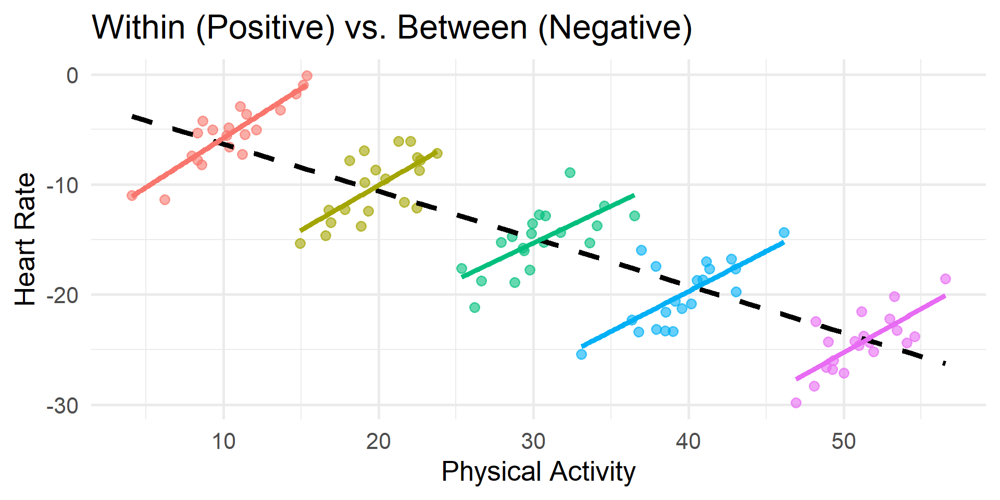
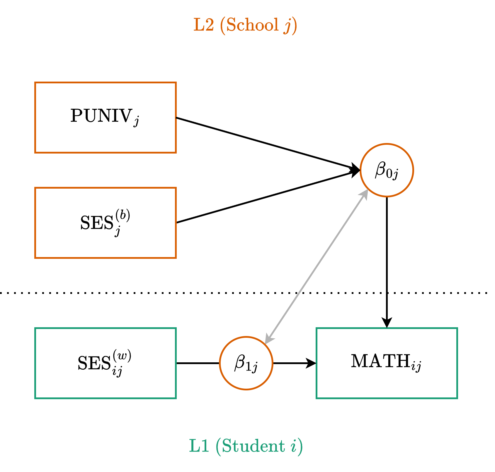
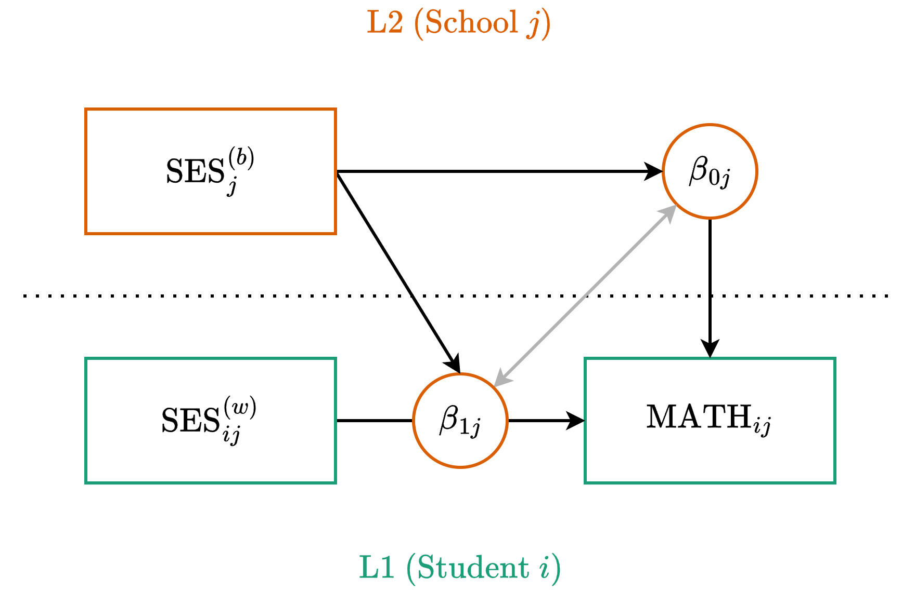
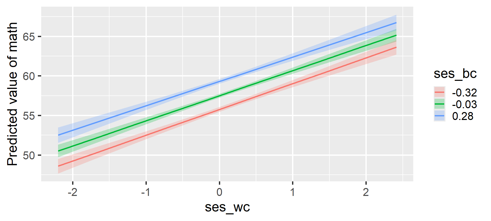

library(tidyverse)
dat_raw <- read_csv("heck2011.csv") |>
mutate(school = factor(school))
dat_l2 <- dat_raw |>
summarize(
.by = school,
puniv = first(puniv),
ses_b = mean(ses, na.rm = TRUE)
) Multilevel Modeling
Centering and Degrouping
Spring 2026 | CLAS | PSYC 894
Jeffrey M. Girard | Lecture 08a

Roadmap
- Conceptual Foundations
- Centering and Standardizing
- Manifest Decomposition
- Applications and Interpretation
- Data Preparation
- Model Building
Conceptual Foundations
The Need for a Meaningful Zero
- The intercept is the expected value of \(y\) when all predictors equal zero
- For categorical predictors, zero is the reference group
- For continuous predictors, a value of zero might be mathematically possible but practically meaningless
- What does a prediction at age 0 mean when studying adults?
- If a school cannot have 0 funding, the intercept becomes uninterpretable
- The Solution: We often transform our continuous predictors so that zero represents a meaningful baseline (usually the mean)
- This is particularly valuable when the intercept is of substantive interest or when the variable is involved in interactions
Centering Level 2 Predictors
- Level 2 predictors represent cluster-level characteristics
- We typically center these using Grand Mean Centering (GMC)
- We subtract the overall (grand) mean from each cluster’s score
- \(z_j^{(c)} = z_j - \bar{z}\)
- Interpretation after GMC:
- A value of 0 now represents the average cluster in the sample
- Positive values are above and negative values are below average
- The intercept becomes the expected outcome for an average cluster
Standardizing Level 2 Predictors
- Sometimes we want our predictors to be on a standardized scale
- For Level 2 variables, this process is (or should be) straightforward
- We subtract the grand mean and divide by the grand standard deviation
- \(z_j^{(s)} = \frac{z_j - \bar{z}}{SD(z)}\)
- Interpretation after Standardizing:
- A value of 0 still represents the average cluster
- A value of 1 represents a cluster that is 1 SD above the mean
- The slope tells us the expected change in \(y\) for a 1-SD increase in \(z\)
The Problem with Level 1 Predictors
- Level 1 predictors like student socioeconomic status (SES) are trickier
- A student’s raw SES score actually contains two different pieces of information rolled into one:
- Within-Cluster Variance: How wealthy is this student compared to their classmates? (The “Frog Pond” effect)
- Between-Cluster Variance: How wealthy is the school this student attends? (The Compositional effect)
- If we just enter raw L1 SES into the model, the software estimates a single slope that aggressively blends these two effects together
- This is called a conflated effect and it can severely bias our results
Multilevel Fallacies and Paradoxes
If we ignore this and report the conflated effect anyway, we risk falling into:
- The Ecological Fallacy: Assuming that relationships observed at the group level (L2) automatically apply to individuals (L1)
- The Atomistic Fallacy: Assuming that relationships observed at the individual level (L1) automatically apply to groups (L2)
- Simpson’s Paradox: The relationship at the aggregate level (L2) is entirely different compared to the relationship at the individual level (L1)
“If the model does not properly account for the fact that there are different relationships between the predictor and the outcome at different levels, we end up with a slope that is an uninterpretable blend of the within-person and between-person slopes.” — Hamaker & Muthén (2020)
Visualizing Simpson’s Paradox

Manifest Decomposition (Degrouping)
- To fix this, we “degroup” the L1 predictor into two new variables
- The Between-Cluster Component (L2)
- We calculate the mean of the L1 variable for each cluster
- \(x_j^{(b)}\) represents the school’s raw average SES
- The Within-Cluster Component (L1)
- We subtract the cluster mean from the student’s raw score
- This specific math is called Cluster Mean Centering (CMC)
- \(x_{ij}^{(wc)} = x_{ij} - x_j^{(b)}\)
- This represents the student’s relative standing within their school
The Magic of Orthogonality
- There is a hidden mathematical benefit to Manifest Decomposition
- Because we calculate \(x_{ij}^{(wc)}\) by subtracting the cluster mean, the sum of these within-cluster scores is exactly 0 for every school
- What this means mathematically:
- The between-cluster component \(x_j^{(b)}\) and the within-cluster component \(x_{ij}^{(wc)}\) are orthogonal, i.e., completely uncorrelated (\(r = 0\))
- Why this matters practically:
- In regression, correlated predictors compete for explained variance
- Because our components are orthogonal, they do not compete
Do We Always Need Both?
- What if you only care about the within-cluster effect? Can you just use cluster mean centering (CMC) and ignore the cluster means?
- Statistically: Yes. Using only the CMC variable will give you an unbiased estimate of the purely within-cluster slope
- Practically: Leaving the cluster means out is usually a missed opportunity!
- Including the between-cluster component \(x_j^{(b)}\) helps explain Level 2 variance and improve the model
- It allows you to estimate the between-cluster effect. This tells you if attending a wealthy school provides a unique benefit above and beyond a student’s individual wealth
Standardizing Level 1 Predictors
- What if we want to standardize a Level 1 predictor?
- We must be careful not to re-conflate the variance we just separated
- The Rule: Standardize Level 1 variables only after degrouping them
- The between-cluster component \(x_j^{(bs)}\) is standardized using the mean and SD of the unique cluster means
- The within-cluster component \(x_{ij}^{(ws)}\) is standardized using a mean of 0 and the pooled within-cluster SD
- This ensures a 1-unit change accurately represents a 1-SD shift at the correct level of analysis
What About Standardizing Y?
- In standard regression (OLS), we often standardize both predictors and the outcome to get fully standardized coefficients
- In multilevel modeling, we typically only standardize the predictors and leave the outcome (\(y\)) in its raw metric
Why do we leave Y raw?
- The variability of \(y\) is partitioned across multiple levels (e.g., within-cluster \(\sigma\) and between-cluster \(\tau_{00}\))
- Standardizing \(y\) globally distorts this variance partitioning and makes the random effects very difficult to interpret
- By only standardizing our predictors, we get “partially standardized” slopes: A 1-SD increase in the predictor leads to a \(\gamma\) unit change in the raw outcome
Best Practice Recommendations
Here is a summary checklist for continuous variables in multilevel models.
- The Outcome Variable: Leave the outcome \((y)\) in its raw, uncentered metric so variance components remain interpretable
- Meaningful Intercepts: Transform continuous predictors when 0 is not naturally meaningful or when the variable is involved in interactions
- Level 2 Predictors: Grand mean center or standardize directly
- Level 1 Predictors: Degroup into between-cluster and within-cluster components
- Standardizing L1: Degroup first, then standardize the resulting components independently
- Random Slopes: If you are testing cross-level or compositional interactions, the Level 1 component must have a random slope
Data Preparation
The Weighting Problem
When we work with Level 1 data (one row per student), Level 2 variables (like school funding or proportion going to university) are repeated for every student in that school
If we simply run center(puniv) on this dataset, the software calculates the mean across all rows, not all schools
Why is this a problem?
- It weights the grand mean and standard deviation by cluster size
- A school with 1,000 students pulls the mean 10 times harder than a school with 100 students!
- The resulting variables are biased toward larger clusters and no longer represent the typical school
The “Split, Transform, Join” Workflow
To safely center and standardize our variables without size bias, we need to explicitly separate our data by level
- Split: Create a dataset with exactly one row per cluster (Level 2)
- Transform (L2): Safely apply Grand Mean Centering and Standardizing to this unweighted data
- Join: Merge these perfect Level 2 variables back into the Level 1 variables
- Transform (L1): Safely apply Cluster Mean Centering and Standardizing to the Level 1 variables
Step 1: Prep the Level 2 Data
First, we load our data and create a Level 2 dataset. We grab our L2 predictor (puniv) and calculate the raw cluster mean for our L1 predictor (ses_b)
Because this dataset has exactly one row per school, we can safely center and standardize without weighting biases!
Step 1: Transform the Level 2 Data
Rows: 419
Columns: 7
$ school <fct> 1, 2, 3, 4, 5, 6, 7, 8, 9, 10, 11, 12, 13, 14, 15, 16, 17, 18,…
$ puniv <dbl> 0.08333333, 1.00000000, 0.33333333, 1.00000000, 1.00000000, 1.…
$ ses_b <dbl> -0.2667500, 0.6799231, -0.5480000, 0.8159412, -0.3892941, 0.25…
$ puniv_c <dw_trnsf> -0.7816475, 0.1350191, -0.5316475, 0.1350191, 0.1350191, …
$ ses_bc <dw_trnsf> -0.2862979, 0.6603752, -0.5675479, 0.7963933, -0.4088420,…
$ puniv_s <dw_trnsf> -2.8454676, 0.4915165, -1.9353811, 0.4915165, 0.4915165, …
$ ses_bs <dw_trnsf> -0.5883235, 1.3570281, -1.1662739, 1.6365364, -0.8401436,…Step 2: Prep the Level 1 Data
Next, take the original L1 data and join our new L2 data into it
Finally, we calculate the within-cluster component. Because cluster-mean-centered scores always sum to zero within a cluster, standardize() automatically calculates the correct pooled within-cluster standard deviation.
Step 2: Transform the Level 1 Data
Rows: 6,871
Columns: 5
$ school <fct> 1, 1, 1, 1, 1, 1, 1, 1, 1, 1, 1, 1, 2, 2, 2, 2, 2, 2, 2, 2, 2, …
$ ses_b <dbl> -0.2667500, -0.2667500, -0.2667500, -0.2667500, -0.2667500, -0.…
$ ses <dbl> 0.586, 0.304, -0.544, -0.848, 0.001, -0.106, -0.330, -0.891, 0.…
$ ses_wc <dbl> 0.852750000, 0.570750000, -0.277250000, -0.581250000, 0.2677500…
$ ses_ws <dw_trnsf> 1.409368976, 0.943297969, -0.458220520, -0.960651677, 0.44…Model Building
Model 1: Establishing Main Effects
- Let’s predict math scores using student wealth and school wealth
- The Predictors:
ses_wc: The student’s relative wealth compared to their peersses_bc: The school’s overall average wealthpuniv_c: The school’s university attendance rate (as an L2 covariate)
- The Goal:
- By including both SES components, we avoid the conflated effect problem and can tease apart the unique effects of both components
- We will also compare the use of centered and standardized predictors
Model 1C: Path Diagram

Model 1C: Centered Equations
Level One (Observation)
\[ y_{ij} = \beta_{0j} + \beta_{1j} x_{ij}^{(wc)} + \color{#4daf4a}{e_{ij}} \]
Level Two (Cluster)
\[ \begin{align} \beta_{0j} &= \color{#377eb8}{\gamma_{00}} + \color{#377eb8}{\gamma_{01}} x_j^{(bc)} + \color{#377eb8}{\gamma_{02}} z_j^{(c)} + \color{#e41a1c}{u_{0j}} \\ \beta_{1j} &= \color{#377eb8}{\gamma_{10}} + \color{#e41a1c}{u_{1j}} \end{align} \]
- \(\gamma_{10}\) is the fixed within-cluster effect
- \(\gamma_{01}\) is the fixed between-cluster effect
- \(\gamma_{02}\) is the fixed effect of our L2 covariate
Model 1C: Mixed Equation
Substitute the L2 equations directly into the L1 equation:
\[ y_{ij} = \underbrace{\color{#377eb8}{\gamma_{00}} + \color{#377eb8}{\gamma_{01}} x_j^{(bc)} + \color{#377eb8}{\gamma_{02}} z_j^{(c)} + \color{#377eb8}{\gamma_{10}} x_{ij}^{(wc)}}_{\text{Fixed}} + \underbrace{\color{#e41a1c}{u_{0j}} + \color{#e41a1c}{u_{1j}} x_{ij}^{(wc)}}_{\text{Random}} + \color{#4daf4a}{e_{ij}} \]
Formula Syntax
y ~ 1 + x_between + x_within + z_l2 + (1 + x_within | cluster)
Our Example
math ~ 1 + ses_bc + ses_wc + puniv_c + (1 + ses_wc | school)
Model 1C: Fitting the Model
# Fixed Effects
Parameter | Coefficient | SE | 95% CI | t(6863) | p
--------------------------------------------------------------------
(Intercept) | 57.66 | 0.12 | [57.42, 57.90] | 470.53 | < .001
ses bc | 5.60 | 0.26 | [ 5.09, 6.11] | 21.54 | < .001
ses wc | 3.19 | 0.17 | [ 2.86, 3.51] | 19.14 | < .001
puniv c | 1.52 | 0.47 | [ 0.60, 2.43] | 3.25 | 0.001 Model 1C: Interpretation
Because our predictors are centered, the coefficients represent changes in raw math points for a 1-unit increase in the raw predictor
Intercept (57.66): The expected math score for an average student (ses_wc = 0) at an average school (ses_bc = 0 and puniv_c = 0)
ses_bc (5.60): Controlling for student wealth and university attendance, a 1-unit increase in a school’s overall SES is associated with a 5.60 point increase in math
ses_wc (3.19): Controlling for school factors, a 1-unit increase in a student’s relative wealth is associated with a 3.19 point increase in math
puniv_c (1.52): Controlling for school and student SES, a 1-unit increase in the university attendance rate (e.g., from 10% to 11%) is associated with a 1.52 point increase in math
Model 1S: Standardized Equations
The structure remains identical, but we swap in the standardized components
Level One (Observation)
\[ y_{ij} = \beta_{0j} + \beta_{1j} x_{ij}^{(ws)} + \color{#4daf4a}{e_{ij}} \]
Level Two (Cluster)
\[ \begin{align} \beta_{0j} &= \color{#377eb8}{\gamma_{00}} + \color{#377eb8}{\gamma_{01}} x_j^{(bs)} + \color{#377eb8}{\gamma_{02}} z_j^{(s)} + \color{#e41a1c}{u_{0j}} \\ \beta_{1j} &= \color{#377eb8}{\gamma_{10}} + \color{#e41a1c}{u_{1j}} \end{align} \]
Because our inputs are standardized, the resulting gammas will tell us the expected change in math points for a 1-SD increase in the predictors.
Model 1S: The Standardized Model
# Fixed Effects
Parameter | Coefficient | SE | 95% CI | t(6863) | p
--------------------------------------------------------------------
(Intercept) | 57.66 | 0.12 | [57.42, 57.90] | 470.52 | < .001
ses bs | 2.73 | 0.13 | [ 2.48, 2.98] | 21.54 | < .001
ses ws | 1.93 | 0.10 | [ 1.73, 2.12] | 19.14 | < .001
puniv s | 0.42 | 0.13 | [ 0.17, 0.67] | 3.25 | 0.001 Model 1S: Interpretation
Because our predictors are standardized and our outcome is raw, the coefficients represent changes in raw math points for a 1-SD increase.
- Intercept (57.66): The expected math score for an average student (ses_ws = 0) at an average school (ses_bs = 0 and puniv_s = 0)
- ses_bs (2.73): Controlling for student wealth and university attendance, a 1-SD increase in a school’s overall SES is associated with a 2.73 point increase in math
- ses_ws (1.93): Controlling for school factors, a 1-SD increase in a student’s relative wealth is associated with a 1.93 point increase in math
- puniv_s (0.42): Controlling for school and student SES, a 1-SD increase in university attendance rate is associated with a 0.42 point increase in math
Model 2: Moving to Moderation
- In Model 1, we established the main effects. We know that being relatively wealthy is beneficial (the within-cluster effect) and attending a wealthy school is beneficial (the between-cluster effect)
- A New Question: Does the benefit of relative wealth depend on the overall wealth of the school?
- In other words, does being the richest kid in school matter more if you are at a poor school versus a wealthy school?
- To test this, we can allow the school’s average SES to moderate the slope of the student’s relative SES (for simplicity, we will also drop puniv here)
- Because both the predictor and the moderator originate from the same variable, this is often called a compositional interaction or self-moderation
Model 2C: Path Diagram

Model 2C: Centered Equations
Level One (Observation)
\[ y_{ij} = \beta_{0j} + \beta_{1j} x_{ij}^{(wc)} + \color{#4daf4a}{e_{ij}} \]
Level Two (Cluster)
\[ \begin{align} \beta_{0j} &= \color{#377eb8}{\gamma_{00}} + \color{#377eb8}{\gamma_{01}} x_j^{(bc)} + \color{#e41a1c}{u_{0j}} \\ \beta_{1j} &= \color{#377eb8}{\gamma_{10}} + \underbrace{\color{#377eb8}{\gamma_{11}} x_j^{(bc)}}_{\text{New}} + \color{#e41a1c}{u_{1j}} \end{align} \]
Model 2C: Mixed Equation
Substitute the L2 equations directly into the L1 equation:
\[ y_{ij} = \underbrace{\color{#377eb8}{\gamma_{00}} + \color{#377eb8}{\gamma_{01}} x_j^{(bc)} + \color{#377eb8}{\gamma_{10}} x_{ij}^{(wc)} + \color{#377eb8}{\gamma_{11}} x_j^{(bc)} x_{ij}^{(wc)}}_{\text{Fixed}} + \dots \] \[ \dots + \underbrace{\color{#e41a1c}{u_{0j}} + \color{#e41a1c}{u_{1j}} x_{ij}^{(wc)}}_{\text{Random}} + \color{#4daf4a}{e_{ij}} \]
Formula Syntax
y ~ 1 + x_between * x_within + (1 + x_within | cluster)
Our Example
math ~ 1 + ses_bc * ses_wc + (1 + ses_wc | school)
Model 2C: Centered Interaction
# Fixed Effects
Parameter | Coefficient | SE | 95% CI | t(6863) | p
------------------------------------------------------------------------
(Intercept) | 57.67 | 0.12 | [57.42, 57.91] | 465.72 | < .001
ses bc | 5.88 | 0.25 | [ 5.39, 6.38] | 23.25 | < .001
ses wc | 3.17 | 0.17 | [ 2.84, 3.50] | 18.84 | < .001
ses bc × ses wc | -0.29 | 0.37 | [-1.02, 0.45] | -0.77 | 0.444 Model 2C: Interpretation
- Intercept (57.67): The expected math score for an average-SES student (ses_wc = 0) at an average-SES school (ses_bc = 0)
- ses_bc (5.88): For a student with average relative wealth, a 1-unit increase in their school’s average SES is associated with a 5.88 point increase in math
- ses_wc (3.17): At an average-SES school, a 1-unit increase in a student’s relative wealth is associated with a 3.17 point increase in math
- ses_bc \(\times\) ses_wc (–0.29): The interaction is near zero and non-significant. The benefit of being relatively wealthy compared to your peers operates similarly regardless of whether you attend a poor school or a wealthy school
Model 2C: Visualizing the Interaction

Model 2C: Simple Slopes Analysis
Estimated Marginal Effects
ses_bc | Slope | SE | 95% CI | t(6863) | p
-------------------------------------------------------
-0.32 | 3.26 | 0.19 | [2.88, 3.64] | 16.82 | < .001
-0.03 | 3.18 | 0.17 | [2.85, 3.51] | 19.00 | < .001
0.28 | 3.09 | 0.21 | [2.68, 3.50] | 14.81 | < .001
Marginal effects estimated for ses_wc
Type of slope was dY/dXThe positive effect of relative SES remains stable and significant across schools with low, medium, and high average SES
Model 2S: Standardized Equations
Finally, we compare with standardized (s) predictors
Level One (Observation)
\[ y_{ij} = \beta_{0j} + \beta_{1j} x_{ij}^{(ws)} + \color{#4daf4a}{e_{ij}} \]
Level Two (Cluster)
\[ \begin{align} \beta_{0j} &= \color{#377eb8}{\gamma_{00}} + \color{#377eb8}{\gamma_{01}} x_j^{(bs)} + \color{#e41a1c}{u_{0j}} \\ \beta_{1j} &= \color{#377eb8}{\gamma_{10}} + \color{#377eb8}{\gamma_{11}} x_j^{(bs)} + \color{#e41a1c}{u_{1j}} \end{align} \]
Model 2S: Standardized Interaction
# Fixed Effects
Parameter | Coefficient | SE | 95% CI | t(6863) | p
------------------------------------------------------------------------
(Intercept) | 57.67 | 0.12 | [57.42, 57.91] | 465.72 | < .001
ses bs | 2.86 | 0.12 | [ 2.62, 3.10] | 23.25 | < .001
ses ws | 1.92 | 0.10 | [ 1.72, 2.12] | 18.84 | < .001
ses bs × ses ws | -0.08 | 0.11 | [-0.30, 0.13] | -0.77 | 0.444 Model 2S: Interpretation
Because our predictors are standardized and our outcome is raw, the coefficients represent changes in raw math points for a 1-SD increase
- Intercept (57.67): The expected math score for an average student (ses_ws = 0) at an average school (ses_bs = 0)
- ses_bs (2.86): For a student with average relative wealth, a 1-SD increase in their school’s average SES is associated with a 2.86 point increase in math
- ses_ws (1.92): At an average-SES school, a 1-SD increase in a student’s relative wealth is associated with a 1.92 point increase in math
- ses_bs \(\times\) ses_ws (–0.08): For every 1-SD increase in a school’s average SES, the standardized slope of relative SES changes by -0.08. This is non-significant, meaning the lines are practically parallel